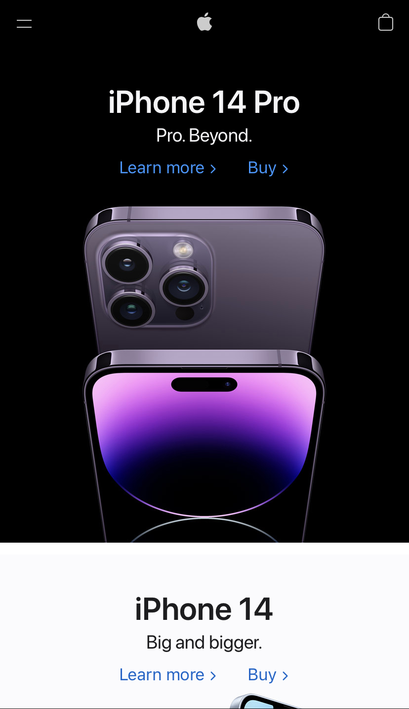
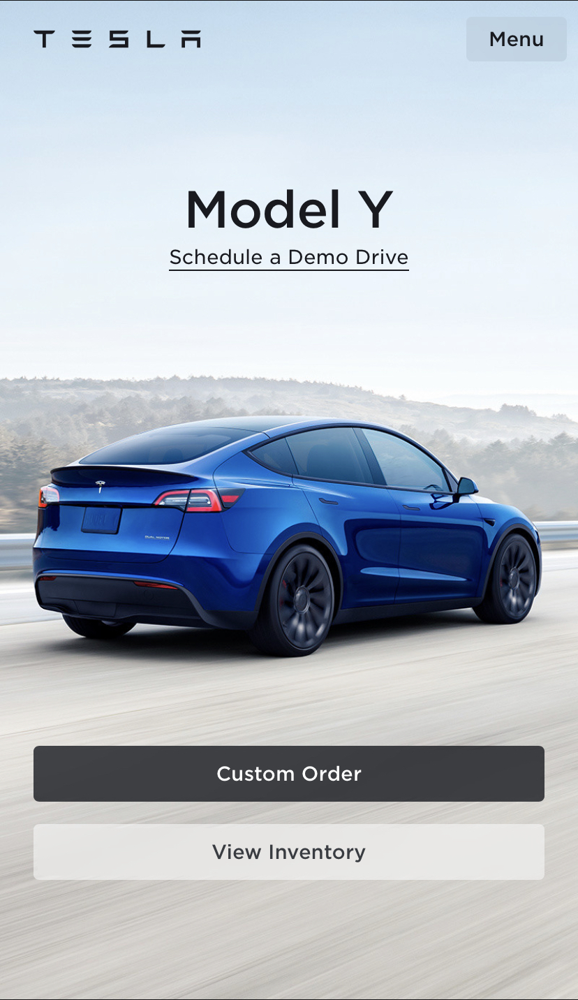

Design Principles
By Zac Williams
Contrast
Apple Inc.
apple.com Apple's website demonstrates the principle of contrast beautifully. It uses the white text on a black background, then black text on a white background to keep your attention. You can clearly see the products they are trying to sell, which is very important when you are using your website to sell things.
Visual Alignment
Nintendo
nintendo.com
Nintendo has a way of aligning the items on their page just right. It's easy to navigate their page and find what you need. The nav bar stays with you throughout the page so you can always find where you need to go.
Emphasis
Tesla
tesla.com On Tesla's site, it's pretty clear what their products are. On the front page, they have images of car models they have. They display it in a very pleasing way that directs you to where you need to go to buy a car.